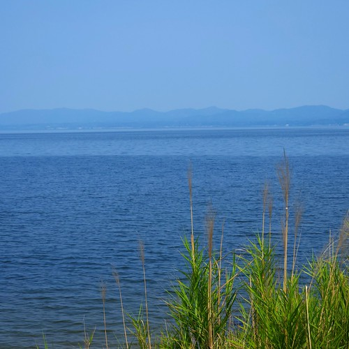
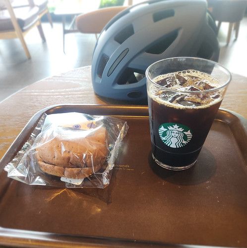
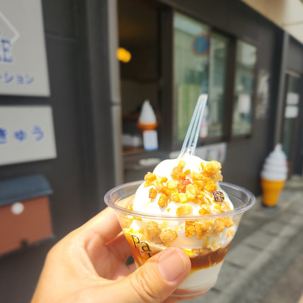
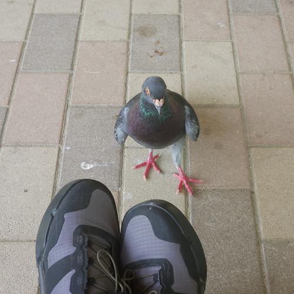
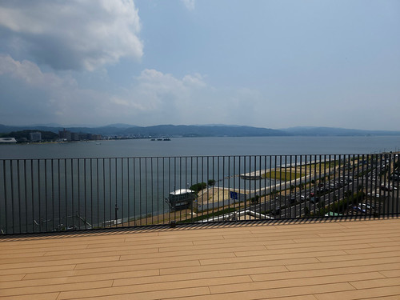
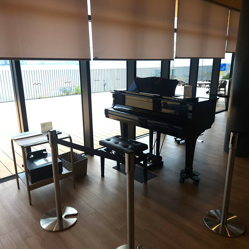
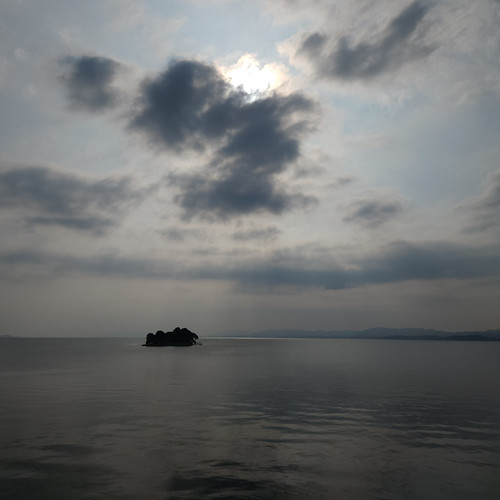
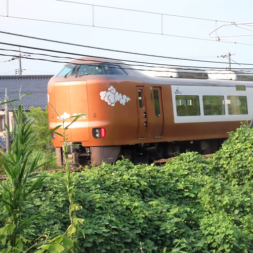

お散歩カメラ 2026-07-19

骨折入院以来，半年以上ぶりの自転車でのお散歩カメラである。 いやぁ，長い道のりだった。
この日の松江市内の最低気温が26.7℃，最高気温が35.3℃。 熱帯夜・猛暑日であった。 このまま8月になったらどうなるんだろうねぇ。
朝のお散歩
自転車に乗れるようになったといっても，筋力・体力ともにまだまだなので，遠出はできない。 当面は休憩を挟みながらちょっとずつ走る感じで。
というわけで，とりあえず玉湯川の河口まで走ってみる。

朝食を食べたばっかりだってのにもうお腹が空いてるよ。 まぁ，いいや。 クールダウンも兼ねてスタバでお茶しようと思ってたので，そちらへ移動する。

汗が引いたところで県立図書館へ。 こんな感じに，細切れに移動している。
松江市役所見学
昼飯をどうしようか考えながら県立図書館から市役所方面へ南下する。
市役所近くにあるソフトクリーム屋さんが珍しく空いてたので（いつもは行列ができてる）買ってみた。

キャラメルトッピング550円。 ソフトクリームというよりジェラートに近い？ 美味しかったです。 道端で食うのもアレなので，近くの末次公園へ移動して四阿で食べてると鳩がわらわらと寄ってくる（笑）

人馴れしてるというか，これ絶対誰か餌付けしてるだろ。 鳩は繁殖力が高くて下手に餌付けすると厄介なので，注意しなはれや！1
容器はソフトクリーム屋さんに返して，市役所に行ってみようか。
新庁舎になった松江市役所のテラスは屋上まで行けるようになってた。 休日も開放されているようだ。

屋内もフリースペースは開いていた。 これが噂の市役所内ストリートピアノか。

同じ2階フリースペースにカフェもあったけど，行列ができてたので諦める。 しょうがない。 松江駅まで出るか。
夕方のお散歩
昼食後，図書館まで戻って夕方まで読書。 ちょっと涼しくなってから，寄り道しつつ，移動する。


今回のトータルの走行距離は32km。 1回あたりの距離は6,7kmくらいの短距離だけど，トータルでは割と走ってるな。 こんな感じでこれからも行こうか。
-
広島にいた頃は鳩の糞害が問題になってて（今もか？），1羽ずつ捕まえて去勢手術とかしたらしい。 ↩︎